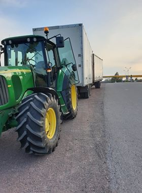

För att lätt hitta runt på denna sidan finns flera flikar. Under fliken "Tjänster" finns alla tjänster som Bröderna Jonsson utför. Under fliken "hö frakt" finns alla priser för frakt av hö. Under fliken analyser kan du hitta analyser och tolkningar av analyser samt näringsrekomendationer.